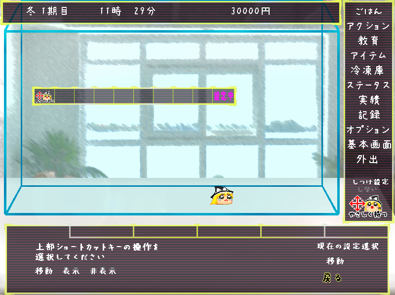

|  | ◆上部ショートカットキー設定◆ 上部ショートカットランチャーにアクションの項目を登録することができます。 一番右側の「設定」をクリックすることで表示 が「設定中」に変わり、現在選択中のアクションが上部ショートカットランチャーの各マスに登録出来ます。 登録を終了する際は、「設定中」をクリックし「設定」に戻します。 ショートカットランチャーに登録したアクションはキーボードの１〜９に対応している他、クリックすることでも呼び出すことが出来ます（クリックで呼び出すには「設定」状態に戻す必要があります。） また、オプションの上部ショートカットキー設定からショートカットランチャーの移動、表示、非表示を選択することが出来ます。（移動後にクリックで呼び出せるようにするには、「表示」状態に戻す必要があります。） |